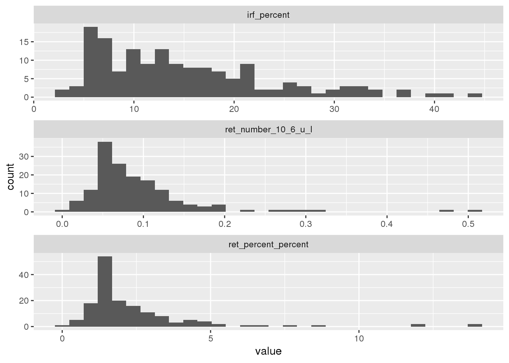
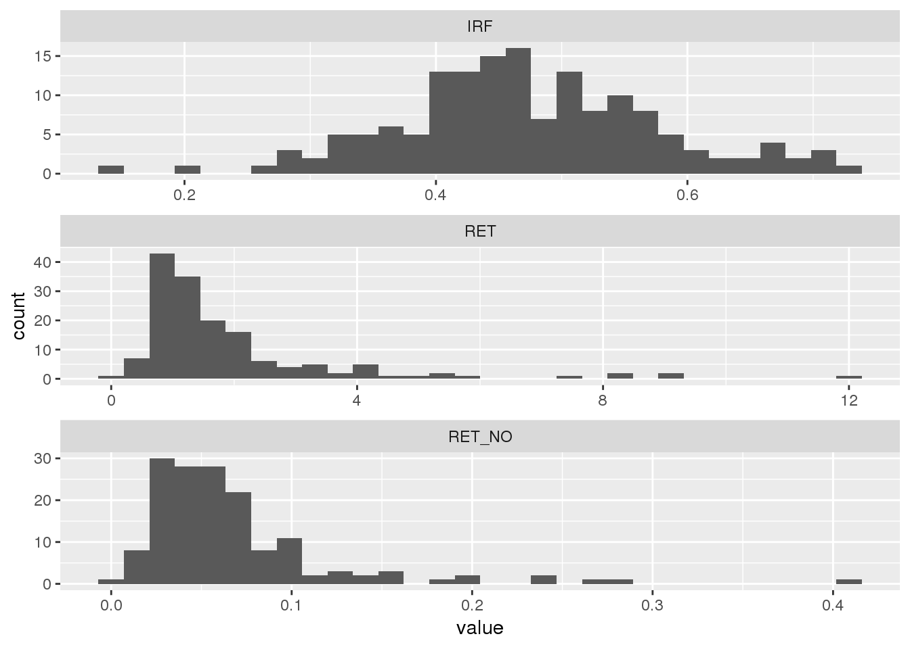

Last updated: 2018-08-31
workflowr checks: (Click a bullet for more information) ✔ R Markdown file: up-to-date
Great! Since the R Markdown file has been committed to the Git repository, you know the exact version of the code that produced these results.
✔ Environment: empty
Great job! The global environment was empty. Objects defined in the global environment can affect the analysis in your R Markdown file in unknown ways. For reproduciblity it’s best to always run the code in an empty environment.
✔ Seed:
set.seed(20180830)
The command set.seed(20180830) was run prior to running the code in the R Markdown file. Setting a seed ensures that any results that rely on randomness, e.g. subsampling or permutations, are reproducible.
✔ Session information: recorded
Great job! Recording the operating system, R version, and package versions is critical for reproducibility.
✔ Repository version: 7e4ff40
wflow_publish or wflow_git_commit). workflowr only checks the R Markdown file, but you know if there are other scripts or data files that it depends on. Below is the status of the Git repository when the results were generated:
Ignored files:
Ignored: .Rhistory
Ignored: .Rproj.user/
Ignored: library/
Untracked files:
Untracked: data/4-17-18/
Untracked: data/4-25-18/
Untracked: data/5-17-18/
Untracked: data/5-3-18/
Untracked: data/5-30-18/
Untracked: data/5-8-18/
Untracked: data/6-14-18/
Untracked: data/7-10-18/
Untracked: data/7-3-18/
Untracked: data/8-1-18/
Untracked: docs/figure/
Untracked: prepped_data/
| File | Version | Author | Date | Message |
|---|---|---|---|---|
| Rmd | 8f8f147 | Amrom | 2018-08-31 | wflow_git_commit(all = TRUE) |
| html | 7b18b97 | Amrom | 2018-08-31 | updfates |
| Rmd | c218dae | Amrom | 2018-08-31 | wflow_git_commit(files = “analysis/first-analysis.Rmd”) |
| Rmd | 5daab19 | Amrom | 2018-08-30 | wflow_git_commit(all = TRUE) |
| html | 5daab19 | Amrom | 2018-08-30 | wflow_git_commit(all = TRUE) |
| html | e8fadf2 | Amrom | 2018-08-30 | Build site. |
| Rmd | 0e057af | Amrom | 2018-08-30 | Add my first analysis |
libloc<-"~/icsh_irf/library"
library(purrr,lib.loc=libloc)
library(tidyr,lib.loc=libloc)
library(stringr,lib.loc=libloc)
library(ggplot2,lib.loc=libloc)
library(dplyr,lib.loc=libloc)
Attaching package: 'dplyr'The following object is masked from 'package:ggplot2':
varsThe following objects are masked from 'package:stats':
filter, lagThe following objects are masked from 'package:base':
intersect, setdiff, setequal, unionlibrary(here,lib.loc=libloc)here() starts at /home/obstfelda/icsh_irflibrary(readr,lib.loc=libloc)
library(janitor,lib.loc=libloc)
library(readxl,lib.loc=libloc)mydirs<-list.dirs(here("data"))
mydirs <- subset(mydirs,str_detect(mydirs,"18$"))
mydf <- tibble(dirs = mydirs)
selector<-function(df_name){
require(snakecase,lib.loc = libloc)
read_csv(df_name, skip = 1) %>%
tbl_df() %>%
select(starts_with("Sample N"),
Date,
starts_with("RET"),
starts_with("IRF")
) %>%
clean_names() %>%
select(-contains("_m")) %>%
mutate_at(3:6,as.numeric) %>%
mutate_at(1,as.character)
}
test<-mydf %>%
mutate(files = map(dirs,dir,"\\.csv$")) %>%
unnest(files) %>%
mutate(glued = paste0(dirs,"/",files)) %>%
filter(!str_detect(glued,"_2")) %>%
filter(!str_detect(glued,"_3")) %>%
filter(!str_detect(glued,"RESEARCH")) %>%
mutate(dfs = map(glued,selector)) %>%
unnest(dfs) %>%
select(-c(1:3)) %>%
select(-ret_he_pg)test %>%
gather("param","value",-c(1:2)) %>%
ggplot()+
geom_histogram(aes(value))+
facet_wrap(~param, scales = "free",ncol = 1)`stat_bin()` using `bins = 30`. Pick better value with `binwidth`.Warning: Removed 6 rows containing non-finite values (stat_bin).
mydf <- tibble(dirs = mydirs)
selector_xl<-function(df_name){
read_xlsx(df_name,na="NA") %>%
tbl_df() %>%
select(c(1:2,13:15))
}
hup<-mydf %>%
mutate(files = map(dirs,dir,"\\.xlsx$")) %>%
unnest(files) %>%
mutate(glued = paste0(dirs,"/",files)) %>%
mutate(dfs = map(glued,selector_xl)) %>%
unnest(dfs) %>%
select(4:8)hup %>%
gather("param","value",-c(1:2)) %>%
ggplot()+
geom_histogram(aes(value))+
facet_wrap(~param, scales = "free",ncol = 1)`stat_bin()` using `bins = 30`. Pick better value with `binwidth`.Warning: Removed 5 rows containing non-finite values (stat_bin).
sessionInfo()R version 3.5.0 (2018-04-23)
Platform: x86_64-redhat-linux-gnu (64-bit)
Running under: Red Hat Enterprise Linux
Matrix products: default
BLAS/LAPACK: /usr/lib64/R/lib/libRblas.so
locale:
[1] LC_CTYPE=en_US.UTF-8 LC_NUMERIC=C
[3] LC_TIME=en_US.UTF-8 LC_COLLATE=en_US.UTF-8
[5] LC_MONETARY=en_US.UTF-8 LC_MESSAGES=en_US.UTF-8
[7] LC_PAPER=en_US.UTF-8 LC_NAME=C
[9] LC_ADDRESS=C LC_TELEPHONE=C
[11] LC_MEASUREMENT=en_US.UTF-8 LC_IDENTIFICATION=C
attached base packages:
[1] stats graphics grDevices utils datasets methods base
other attached packages:
[1] snakecase_0.9.2 bindrcpp_0.2.2 readxl_1.1.0 janitor_1.1.1
[5] readr_1.1.1 here_0.1 dplyr_0.7.6 ggplot2_3.0.0
[9] stringr_1.3.1 tidyr_0.8.1 purrr_0.2.5
loaded via a namespace (and not attached):
[1] Rcpp_0.12.18 cellranger_1.1.0 pillar_1.3.0
[4] compiler_3.5.0 git2r_0.23.0 plyr_1.8.4
[7] workflowr_1.1.1 bindr_0.1.1 R.methodsS3_1.7.1
[10] R.utils_2.7.0 tools_3.5.0 digest_0.6.16
[13] evaluate_0.11 tibble_1.4.2 gtable_0.2.0
[16] pkgconfig_2.0.2 rlang_0.2.2 yaml_2.2.0
[19] withr_2.1.2 knitr_1.20 hms_0.4.2
[22] rprojroot_1.3-2 grid_3.5.0 tidyselect_0.2.4
[25] glue_1.3.0 R6_2.2.2 rmarkdown_1.10
[28] magrittr_1.5 whisker_0.3-2 backports_1.1.2
[31] scales_1.0.0 htmltools_0.3.6 assertthat_0.2.0
[34] colorspace_1.3-2 labeling_0.3 stringi_1.2.4
[37] lazyeval_0.2.1 munsell_0.5.0 crayon_1.3.4
[40] R.oo_1.22.0 This reproducible R Markdown analysis was created with workflowr 1.1.1